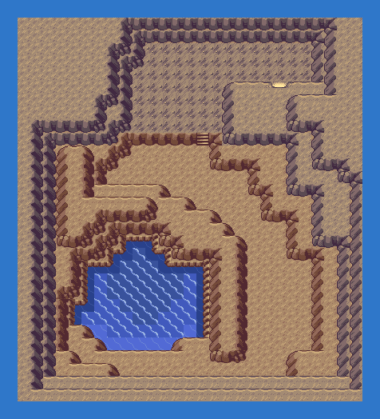

PokémonEMMA'S EMERALD
OFFICIAL Strategy Guide
Marine Cave End
‹ Weather Institute: where are they?Quest: Kyogre and Groudon return (Post-game, LV65+) · 2 of 3Next: Terra Cave End ›
TIP
No wild Pokémon in the grass here. Time of day: M = morning (6–10), D = day (10–19), E = evening (19–20), N = night (20–6).
Event 1: Kyogre
Surf to the Marine Cave's mouth on the reported sea route and follow the tunnel to the end. Kyogre, level 70, sleeps in the pool. Electric or Grass; Dusk Balls in the cave.

‹ Weather Institute: where are they?Quest: Kyogre and Groudon return (Post-game, LV65+) · 2 of 3Next: Terra Cave End ›
62